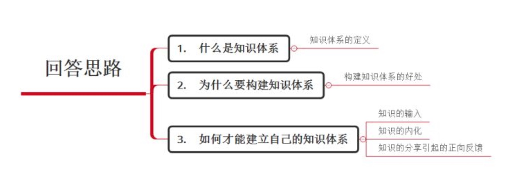
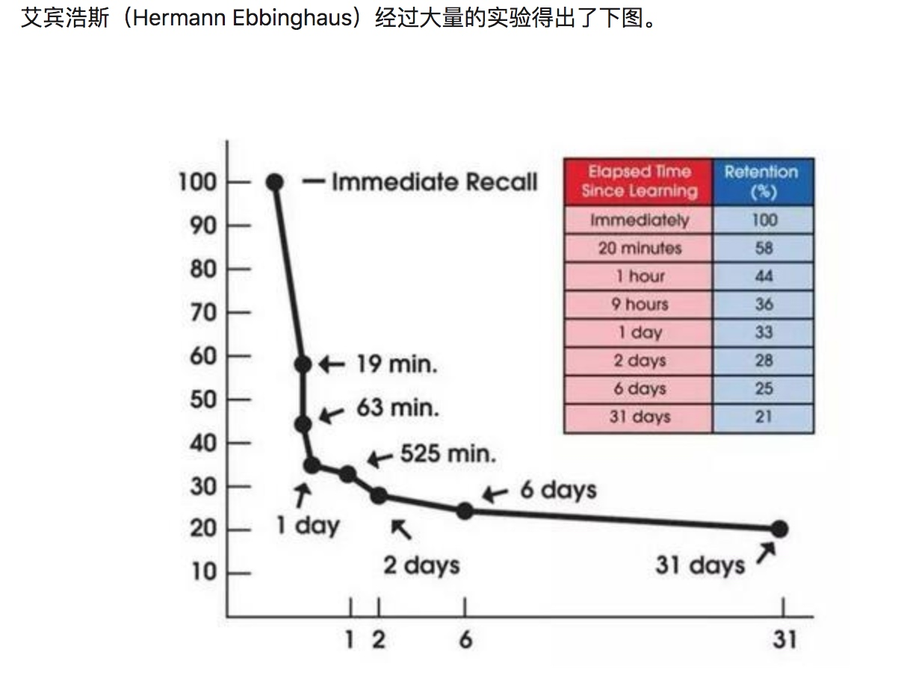
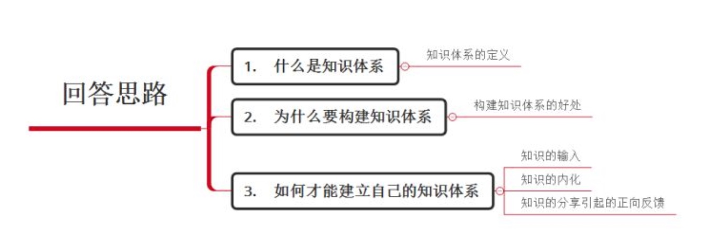
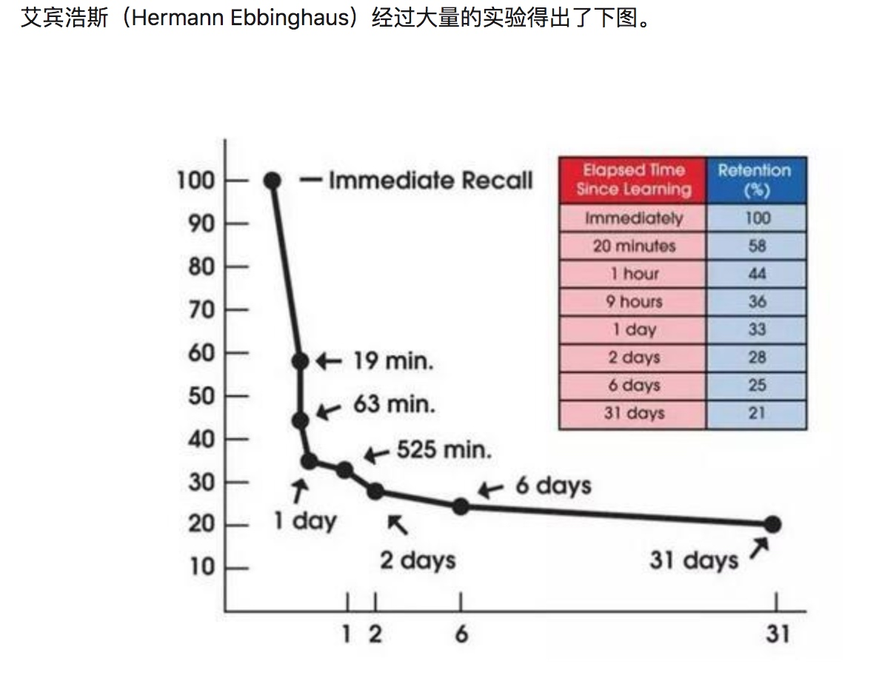
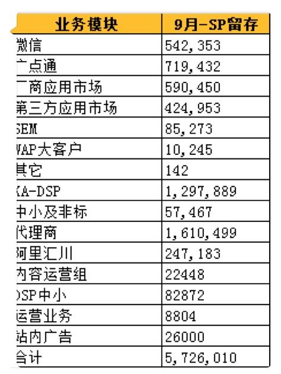

下集：https://www.bilibili.com/video/av279026
magnet:?xt=urn:btih:ba9df42aabccc02999acdc8007abb130604e887b&dn=SNIS-721%20脚長8頭身パーフェクトボディの初イキ！！初体験4本番スペシャル%20青山沙也加.avi
magnet:?xt=urn:btih:d4f4d16bf4f2c360b55330dc65504c9f6bfefc61&dn=第一會所新片%40SIS001%40%28kawaii%29%28KAWD-811%29新人！kawaii専属デビュ→8
magnet:?xt=urn:btih:4efdb66c1a30688f4c75daa47d3b259ec7a00253&dn=SGA-035%20美脚過ぎる元レースクィーン人妻%20真琴りょう%2033歳%20AVデビュー%20旦那の浮気を言い訳に自らの性欲を発散させるためAV出演を決めた8頭身人妻
magnet:?xt=urn:btih:4628a24b10da75de6ba594537fc77596f35db47a&dn=秋吉ひな%20%5BPGD-559%5D%208頭身美脚パンストフェティシズム
magnet:?xt=urn:btih:5357f0885ea2733c0a2a680cf32dc0eeb4f423c3&dn=SNIS-879%208頭身美脚お姉さんの恥ずかしい放尿と人生初の失禁%20笹川りほ.mp4
magnet:?xt=urn:btih:7534ea5092c6b25870e9801492c94e5ae2b699fe&dn=第一會所新片%40SIS001%40%28E-BODY%29%28EYAN-038%29ビーチで噂の8頭身若妻！長身_美脚_美巨乳ライフセーバー_強すぎる性欲が抑えきれず…笹本梓
magnet:?xt=urn:btih:feddc5f4a9d53699fe035dd7c3ed3de2c7e84ee1&dn=54.店長推薦作品%20S2M-008%20Encore%20Vol.8%20雨宮琴音%20名模級八頭身比例美女.奇跡美鮑滿開下馬作登場%21%21
magnet:?xt=urn:btih:b1526c83b2b0e528b7470256ccc21261e50efccc&dn=黑山小妖%40第一会所%40美竹すず高清8部合集

1、品牌是保障、信任
2、精准的需求刺激是营销的主要手段
3、互联网快消品化是趋势
4、迅速的兑现客户价值，提升运营效率 是基础
5、降低门槛